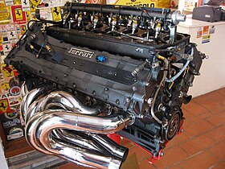
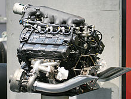
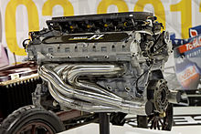
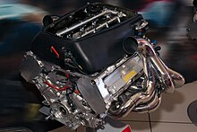

Motory
Přirozeně nasávané motory
1950–1960: V počátcích F1 se používaly různé konfigurace – od čtyřválcových až po V12 motory.
1961–1965: S přísnějšími předpisy se objevily menší, často 1,5litrové přirozeně nasávané motory (různé konfigurace jako V8, V6, V12).
Turbo motory
Konec 70. let – 80. léta: Období, kdy se do F1 dostaly turbo motory, obvykle s konfigurací V6. Tyto motory dosahovaly extrémních výkonů, zejkladně ve kvalifikacích.
V10 motory
1989–2005: Dominantní éra V10 motorů, které byly oblíbené díky svému ideálnímu kompromisu mezi výkonem a hmotností. Tento typ byl klíčový pro modernizaci závodních vozu.
V8 motory
2006–2013: V této době byly standardem 2,4litrové V8 motory. Přinášely odlišný zvuk a dynamiku ve srovnání s předchozí V10.
Hybridní motory (V6 turbo hybridní jednotky)
 (1).jpg)
Od roku 2014: Nová generace motorů kombinuje 1,6litrový V6 turbo s hybridními systémy pro rekuperaci energie, což vede k vyšší účinnosti a inovativním technologickým řešením.